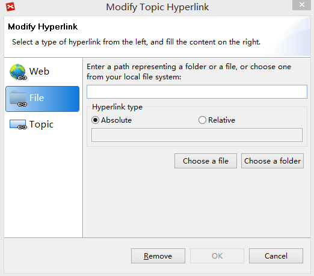

ハイパーリンク
トピック内のハイパーリンクは、マインド マップから ウェブサイト、フォルダー、ローカル ファイルに接続することができます。この方法でマインドマップを強化し、情報管理を向上させることができます。
ハイパーリンクの作成:- トピックを選択し、次の 4 つのいずれかの方法でハイパーリンク設定画面を開きます。
- メニューから[変更] →[ハイパーリンク]を選択する。
- ツールバーのハイパーリンクアイコン をクリックする。
- Ctrl + H キーを押します。(Mac ユーザーは Command + Shift + H)
- 対象のトピックを右クリックし、[ハイパーリンク]を選択する。
- 以下の 3 つのハイパーリンクのタイプから選択します。
- "Web": URL を入力します (例: http://www.XMind.net)。
- "ファイル"： ローカルのファイルまたはフォルダーのパスを追加します。ハイパーリンクのタイプは、相対または絶対が設定できます。
- "トピック" : 現在のブック内の他のトピックにリンクします。
- "OK" をクリックして終了します。

ハイパーリンクを開く:
- 対象トピックのハイパーリンク アイコン をクリックします。
ハイパーリンクを修正 :
- 対象のトピックを右クリックし、[ハイパーリンク]から ハイパーリンクの設定画面 を開きます。
- 設定画面でリンクを変更した後に、[OK]をクリックします。
ハイパーリンクの削除:
- 対象のトピックを右クリックし、[ハイパーリンク]から、ハイパーリンク設定画面を開きます。
- 設定画面で[再移動]ボタンをクリックします。
注:
- 各トピックそれぞれに、URLを指定して、ハイパーリンクを設定することができます。(1 つのトピックに複数の URL を関連付けすることはできません。）
- 注内のハイパーリンクについて詳細を知りたい場合は 注をお読みください。